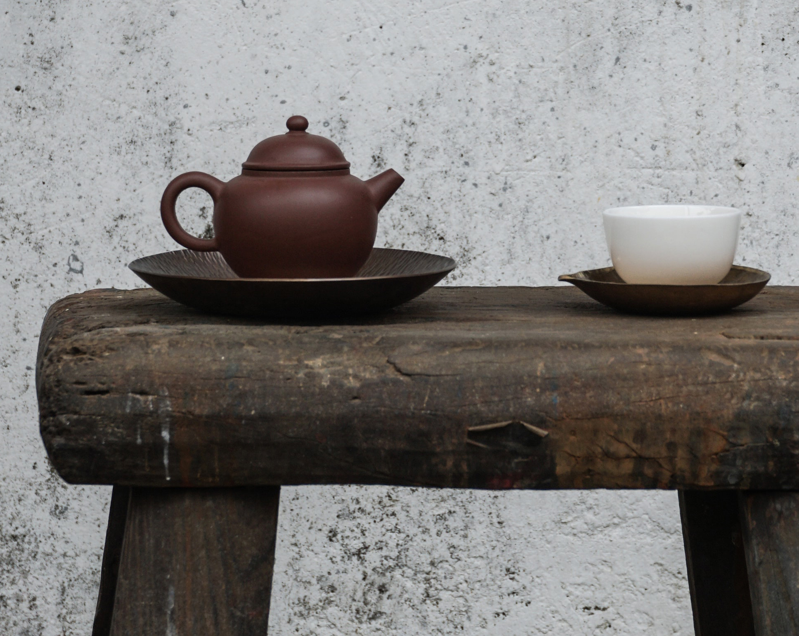
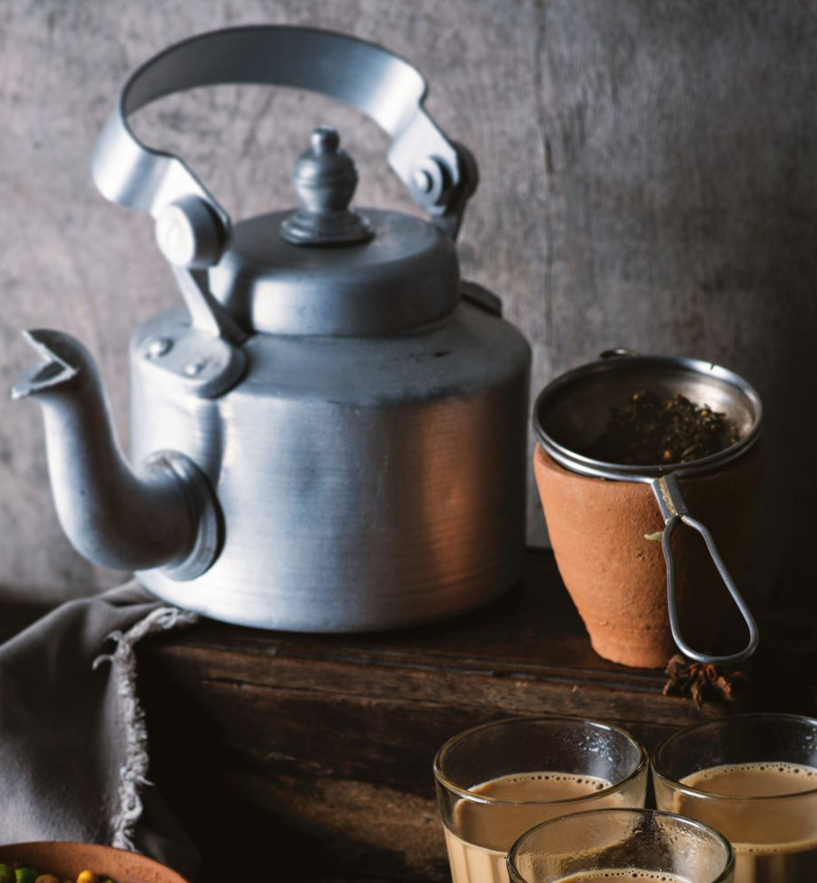
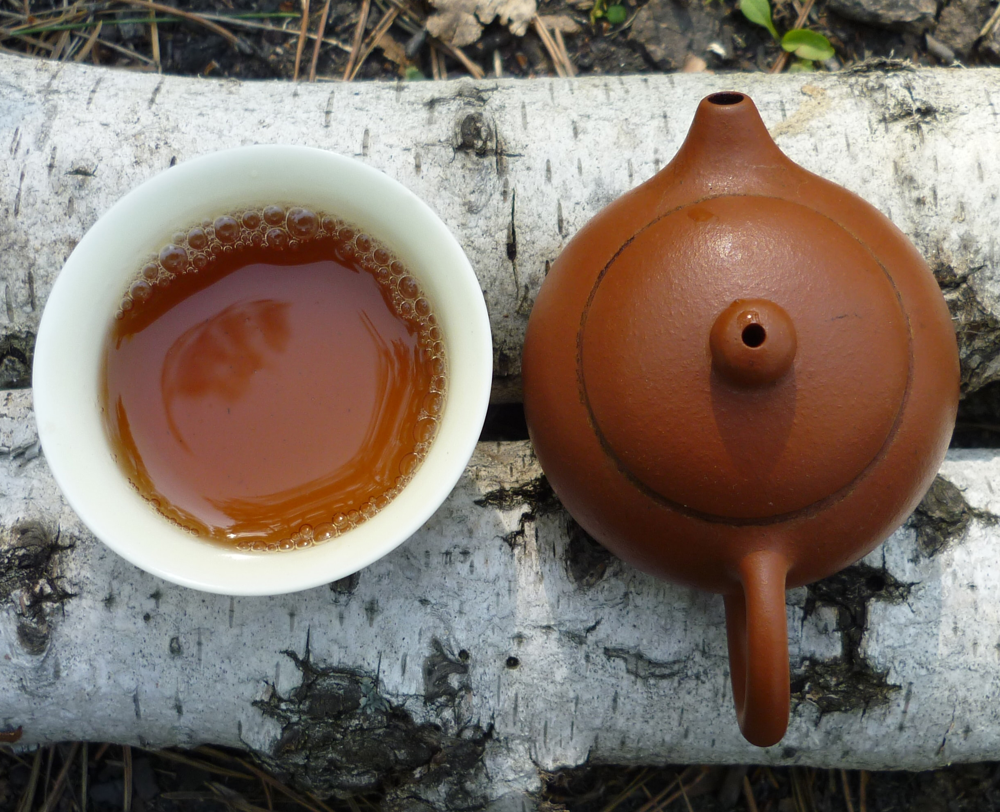

We all can agree, our afternoon tea is kind of a big deal. At Cha Bar, we've made it more special for you! Experience the authentic
flavours from tea houses across China, India and turkey in the heart of the city. Our motive is to bring a villagey, rustic atmosphere
that lets you enjoy your delicious cuppa just the way its meant to be.
Once you select your flavours from our extensive collection, we’ll carefully time and prepare the brew so as to ensure
that you enjoy a delicate tea that evokes the slow brewing skills of the village elders.
Tea was first discovered in China and India is well known for its unique use of spices and flavours. Turkish tea is an offer you cannot refuse.
Together, we call these countries as the golden tea triangle.


“I say let the world go to hell, but I should always have my tea.”

Back due to popular demand, join Muddy Fingers Pottery to make a teapot for those winter days!
All materials, equipment and firings are provided for you to create a handmade teapot.
With two expert tutors on hand to advise and inspire, you will make a two cup teapot of your own design during the afternoon session.
Learn how to decorate and assemble the various parts of your teapot,
which will then be taken back to Muddy Fingers Pottery to be fired and glazed in a glaze of your choice.
The teapots will be dropped back off at Cha bar around three weeks later for you to pick up and be amazed at how talented and creative you are!
When? 20th April, 6.30pm
Tea is what we do, it is what we are passionate about. Not just any tea, it has to be the BEST tea.
We don't sell tea bags, We don’t sell decaffeinated tea, for good reasons. What we have is a wide variety of natural loose tea leaves.
We also sell lots of of herbs and tisanes that are naturally caffeine free. We usually have over 200 teas and plenty of authentic accessories to help you get the most out of tea.
We to invite you to check out collection and enjoy free tastings.
When? Fri, Sat, and Sunday from 2-7 pm
Since january 2020, we have become a 100% eco-friendly cafe.
Our tea brand is not only organic and fairly traded, but there’s also no tea bag to worry about.
Our loose-leaf tea is enclosed in backyard compostable packaging that’s made from a cellulose material.
Even our labels on the front and back of the package are compostable and made from hemp-based or sugar cane-based paper. The sugar cane fibers are collected from sugarcane waste, which further helps divert waste from landfills.
When you’re done drinking your tea, you can easily compost the tea leaves and packaging with no waste.